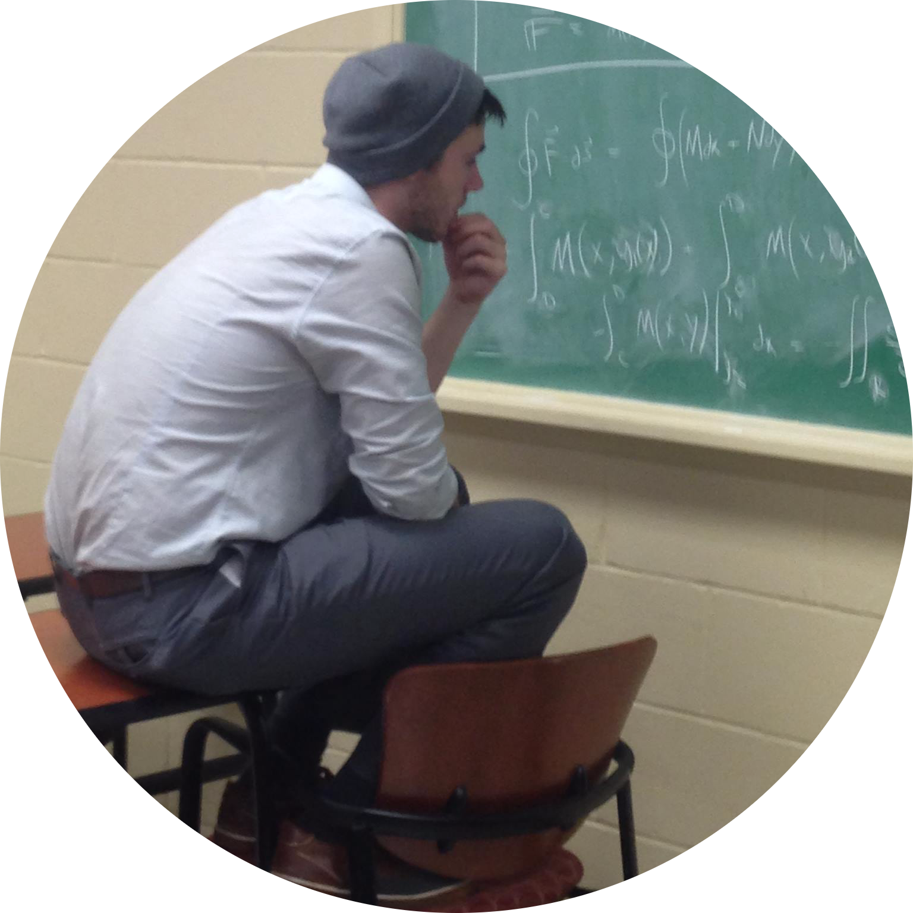
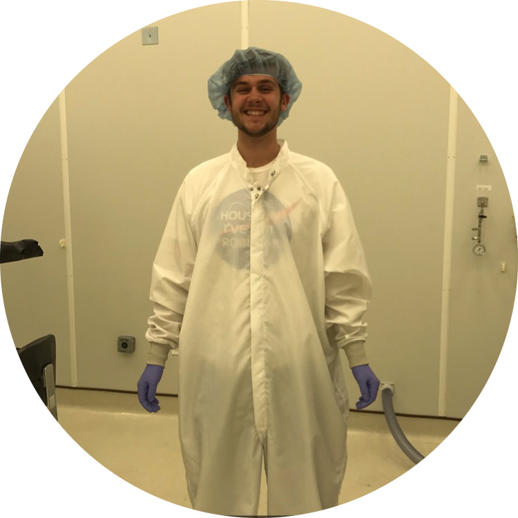

About Josh

I am a graduate student working with Roman Grigoriev in the Center for Non-Linear Science at the Georgia Institute of Technology. My research interests include pattern formation, exact coherent structure theory, and extreme event production in infinite-dimensional systems. So many other fields of science have well-developed mathematical tools and conceptual frameworks to pull from. Non-linear field theories, in general, lack any well-developed, widely applicable “toolbox” that scientist can use to solve them. For that reason, dynamics of non-linear fields is an incredibly exciting field (pun intended), and its just waiting for someone to come along and make sense of it. To date, reduced order models are our best bet, which is why I study pattern formation and exact coherent structure theory, specifically. Using these tools, I try to make sense of how the world around me works, and I get to asnwer questions like: what kind on impulses cuase brains to start to seizure, and how can we stop it? What conditions cuase rogue waves to build atop the surface of the ocean, and how can design ships to better dissipate the energy of these catastrophic waves? How can we explain the collapse of the wavefunction, an event that has long baffled physiscists and laughed in the face of both determinism and information theory? All of these questions, and their anwers, come down to non-linear field theories.

While my work now is entirely theoretical and computational, my science career actually started as an experimental physicist at Princeton University working with Frank Calaprice and the SABRE collaboration. During my time there, I learned how to design and build scientific systems (a bunch had to be radioactively pure, chemically resistant, air tight…the list goes on and on). I got to probe the cosmos for dark matter through building a crystal-scintillating dectector that was designed to literally light up everytime a dark matter particle collided with it. I even got to travel Italy with the collaboration, and work on the Darkside insertion system, nestled deep underneath the Gran Sasso mountain just outside of L’Aquila. My time at Princeton was the first time I ever got to truly explore the world around me and build contraptions that could ask it how it works. It made me want to be a scientist.
While my work as an experimentalist was incredibly fulfilling, I was frustrated that company lead times and technical spreadsheets were getting in the way of my science so often. I knew that I wanted to work in theory, where it was just me grappling with the mechanisms themselves. That’s why, in my junior year of undergrad, I walked right into Stefan Boettcher’s office and asked to work with him on his incredible research. With Stefan, I studied the asymptotic (in time) dynamics of Quantum Walks, and got my first taste of non-linear dynamics. After many long nights hunched over my laptop and scribbled pieces of paper, I had my first publication.
As I matriculated into grad school, I transitioned from dynamics on finite dimensional systems to the full monster of dynamics on infinite-dimensional systems (as if the former wasn’t hard enough). I’m now spend most of my days next to the window in the Howey physics building, office W505, trying to better understand the world around me. My research group in known for especially long PhD completion times, on the order of 6 years, due to the complexity of our field. I’m not bothered by that, because I love the work I do.
My pronouns are He/Him/His, and while I’ve never been misgendered, or discriminated against, many incredible people in this community have been. Social justice is very close to my heart, and if there’s any way I can help make science more inclusive, please reach out.